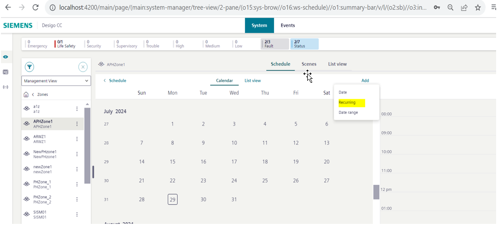
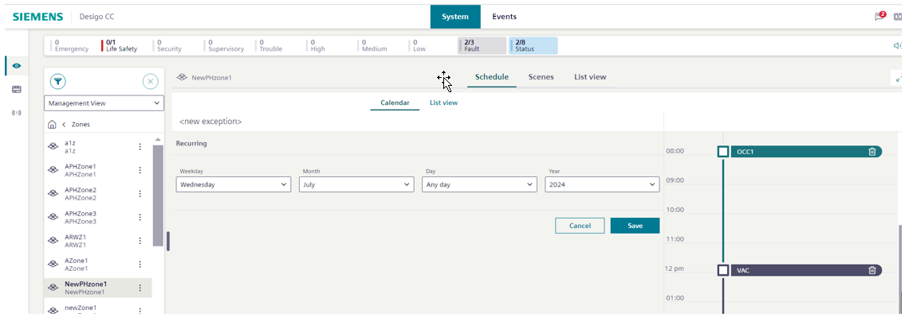

Exceptions for APOGEE Schedules
When you create a schedule within an APOGEE zone, you may encounter a situation where the regular schedule should not apply. These changes to the normal schedule are called "exceptions," and can be added on a recurring basis ("recurring exception") or for a specific date ("date exception").
Note: You must have first created a zone for an APOGEE panel to add any type of exception.
Take the following steps to add either a recurring or date exception:
- In System Browser, select Management View.
- Select the relevant APOGEE P2 Panel.
- Select the zone in which you want to create an exception.
- Click Edit -> Exception -> Add. Depending on the type of exception you want to add, select either Recurring or Date from the dropdown.
- If the exception you want to add is a Date type, click the date on the calendar where the exception will occur, and select a time of day. The exception will be valid for the single date and time selected. For more details on date exception logic see Notes on Date Exceptions.

- If the exception is of type Recurring, a set of dropdown menus will appear to select the frequency of recurrence. Once you select a frequency, it will be subject to validation. For more on validation see Validations on Recurring Exceptions in Operating Reference. For details on recurring exception logic see Notes on Recurring Exceptions.

- If you later want to edit or delete your exception, you can return to a previously created exception by the workflow above, and select Editor Delete.
- Once saved, the schedule exception configuration is complete.
Notes on Recurring Exceptions
- Treatment of recurring exceptions by the APOGEE panel. A recurring exception created on the Flex Client is handled like a weekly schedule by the APOGEE panel.
- Users will be allowed to configure only one switching point in any recurring exception.
- Modification of Existing DCC Schedules. In some cases there may be already-existing weekly schedules that have been set up within the DCC management station. When those schedules are edited within the Flex Client, it will have the downstream effect of rewriting those already-existing schedules into multiple schedules on the APOGEE panel. Note that mode execution points will remain the same.
Notes on Date Exceptions
- A date exception is treated as a single schedule event by the panel.
- Users will be allowed to configure multiple switching points in any date exception.
- Differences in representation due to full day exceptions. After a user saves a date exception and navigates to the zone overview page, the full day exception will not appear. Once the zone representation is re-read, the full day exception will appear (there will be no impact from mode switching points).
Modification of Overrides
- For a recurring exception, if a user modifies both the mode and time , then all overrides associated with that exception are deleted.
- If a recurring exception has either its mode or time modified (but not both), then the override is retained.
- When the user modifies any date exception that contains an override, an equivalent once schedule will be created in its place.
- Adding exceptions to days with overrides. If a day contains both an exception and an override, reconfigure or adjust the existing schedule.